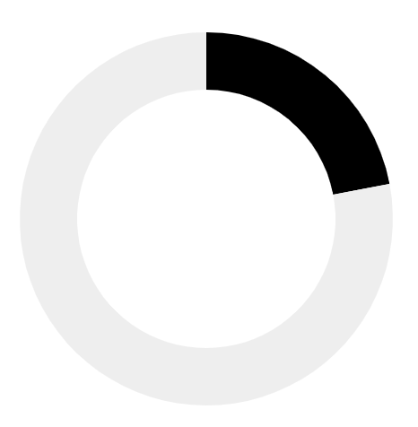
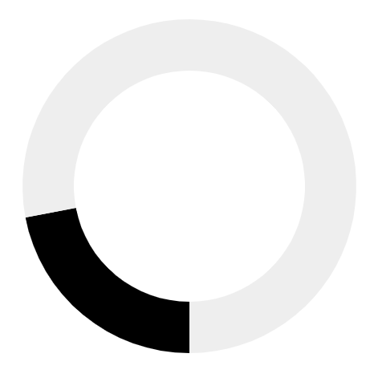

This wireframe is still a Work in Progress.
Wiki Loves Women Q2
from
to
(America/New York)
in Kala Academy
at Campal, Panjim, Goa
Content drive
with GLAM & Directorate of Museums
A short event description if required. Phasellus pulvinar pretium elit, sit amet pellentesque augue viverra ac. Mauris fermentum mauris neque, eu interdum urna mattis scelerisque. Pellentesque in magna nunc. Sed pulvinar scelerisque elit nec bibendum. Vivamus faucibus ligula vel ipsum hendrerit consectetur. Vivamus rutrum sagittis convallis. Pellentesque ex felis, ullamcorper eget porta ultrices, molestie vitae massa. Donec interdum massa non nisi tempus, ut semper est aliquam.
Participation
Participants- 43
New editors- 22%  The number of new accounts created, including users that registered up to 15 days before the event (on any wiki).
7-day retention- 13 The number of new editors who make at least one edit, in any Wikimedia project (in any namespace), between 7 days after the event and the time that the report is run.
Females- 29%  What does this even mean? Should this be on a spectrum?
Impact
- New page survival rate
- 88% Main space only
- Views to pages created
- 42k Views to pages that were created from the time they were created, till date.
- Views to pages improved
- 992k Views to pages that were improved from the time of the event, till date.
- Views to uploaded files
- 5k Views to files that were uploaded.
- Pages with uploaded files
- 428
- Plays to uploaded audio/video
- 73
Contributions
Pages created- 61 A content page is a page in either the main or file namespace.
Pages improved- 732 A content page is a page in either the main or file namespace.
Edits- 90k
Words added- 3m
Files uploaded- 3.8k
- Wikidata items created
- 55
Wikidata claims added- 231
Bytes added- 34m
Per-wiki metrics
| Wiki | Pages created | Views | Survival rate | Pages improved | Views | Edits | Uploads | Words added | Bytes added |
|---|---|---|---|---|---|---|---|---|---|
| gom.wikipedia | 30 | 90 | 79% | 320 | 960 | 43,382 | |||
| mr.wikipedia | 12 | 36 | 89% | 126 | 372 | 12,530 | |||
| en.wikipedia | 19 | 57 | 87% | 188 | 549 | 17,882 |